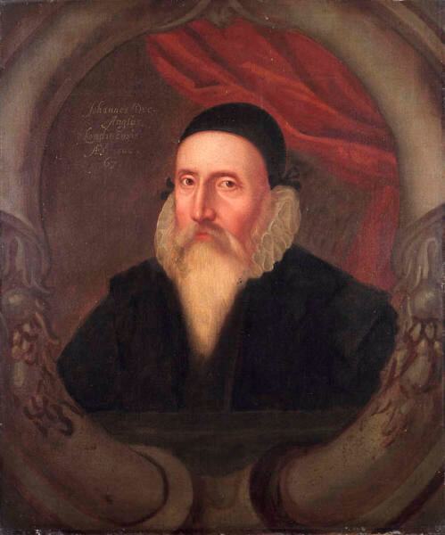
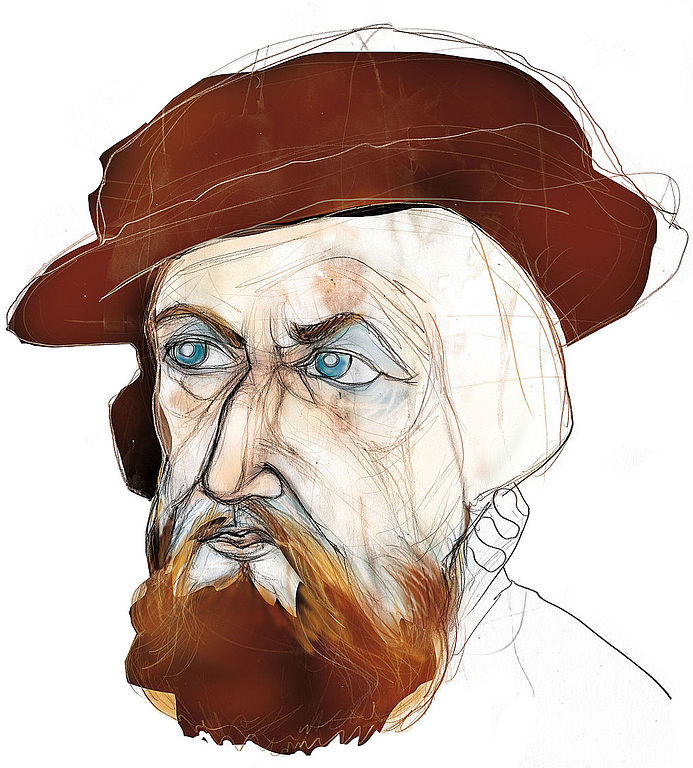

Навигацию у нас в мореходном училище преподавал Христофор Бонифатьевич Врунгель.
― Навигация, ― сказал он на первом уроке, ― это наука, которая учит нас избирать наиболее безопасные и выгодные морские пути, прокладывать эти пути на картах и водить по ним корабли… Навигация, ― добавил он напоследок, ― наука не точная. Для того чтобы вполне овладеть ею, необходим личный опыт продолжительного практического плавания…
Андрей Некрасов. Приключения капитана Врунгеля


THE ARTE OF NAVIGATION, demonstrateth how, by the shortest good way, by the aptest Directiō, & in the shortest time, a sufficient Ship, betwene any two places (in passage Nauigable,) assigned: may be coducted : and in all stormes, & naturall disturbances chauncyng, how, to vse the best possible meanes, whereby to recouer the place first assigned. What nede, the Master Pilote, hath of other Artes, here before recited, it is easie to know: as of Hydrographie, Astronomie, Astrologie, and Horometrie. Pre-supposing continually, the common Base, and foudacion of all: namely. Arithmeticke and Geometrie. So that, he be hable to vnderstand, and Iudge his own necessary Instrumentes, and furniture Necessary: Whether they be perfectly made or no: and also can, (if nede be) make them, hym selfe. As Quadrants, the Astronomers Ryng, The Astronomers staffe, the Astrolabe vniversall. An Hydrographicall Globe. Charts Hydrographicall, true, (not with parallel Meridians).
The Common Sea Compas: The Compas of variacion: The Proportionall, and Paradoxall Compasses (of me Invented, for our two Moscouy Master Pilotes, at the request of the Company) Clockes with spryngs : houre, halfe houre, and three houre Sandglasses : & sundry other Instrumetes : And also, be hable, on Globe, or Playne to describe the Paradoxall Compasse: and duely to vse the same, to all maner of purposes, whereto it was inuented. And also, be hable to Calculate the Planetes places for all tymes.
Moreouer, with Sonne Mone or Sterre (or without) be hable to define the Longitude & Latitude of the place, which he is in: So that, the Longitude & Latitude of the place, from which he sayled, be giuen : or by him, be knoune whereto, appertayneth expert meanes, to be certified euer, of the ships way. &c. And by foreseing the Rising, Settyng, Nonestedying, or midnightyng of certaine tempestuous fixed Starres: or their Coniunctions, and Anglynges with the Planetes, &c. he ought to have expert coniecture of Stormes, Tempestes, and Spoutes : and such lyke meteorologicall effectes, daungerous on Sea. For (as Plato sayth,) Mutationes, opportunitatisq temporum presetire. non minus rei militari, Agriculturae, Nauigationiq conuenit. To foresee the alterations and opportunities of tymes, is convenient, no lesse to the Art of Warre, then to Husbandry, and Nauigation.
And so of Mone, Sterres, Water, Ayre, Fire, Wood, Stones, Birdes, and Beastes, and of many thynges els, a certaine Sympathicall forewarnyng may be had: some tymes to great pleasure and proflit, both on Sea and Land. Sufficiently, for my present purpose, it doth appeare, by the premisses, how Mathematically the Arte of Nauigation, is : and how it nedeth and also vseth other Mathematicall Artes
Искусство навигации показывает, каким образом подготовленный к плаванию корабль можно провести по судоходному маршруту между двумя назначенными точками, как сделать это кратчайшим путем, наиболее подходящим курсом и за самое короткое время; как, используя все возможные средства, пройти к назначенной цели через все штормы и природные катаклизмы. Какие другие искусства, из перечисленных нами выше, таких как гидрография, астрономия, астрология и орометрия, требуется знать главному штурману. Ему всегда полагается знать основные или фундаментальные науки, а именно арифметику и геометрию. Он должен понимать и разбираться в необходимых инструментах и оборудовании, понимать, насколько совершенно они изготовлены. Уметь, если возникнет необходимость, самому изготовить их. Речь идет о квадранте, астрономическом кольце, астрономическом жезле [посох Якова – g.-g.], универсальной астролябии, гидрографическом глобусе, гидрографической карте (истинной, не с параллельными меридианами). А также об обычном морском компасе, компасе для измерения магнитного склонения, пропорциональном циркуле и Paradoxall Compasse (изобретенном мной для наших двух главных штурманов Московской компании по запросу компании) [об этом гаджете для проведения локсодром мы поговорим позже – g.-g.], пружинных часах, песочных часах на один час, на полчаса, и на три часа и многих других инструментах. Также он должен уметь на глобусе или плоской карте начертить локсодрому, а также применить эти навыки должным образом для других целей и в других областях, где это потребуется. Кроме того, он должен уметь вычислять места планет для любого момента времени.
По солнцу, луне или звездам (или без них) он должен определять долготу и широту места, в котором он находится. Так что ему становятся известны долгота и широта места отплытия а также , с привлечением мнений квалифицированных экспертов, и маршрут корабля и т.д. Также он должен приобрести навыки в предсказании штормов, ураганов и смерчей путем предвычисления восхода, захода, … некоторых неподвижных звезд, связанных с явлениями непогоды, или их связь или взаимодействие с планетами и т.д. Он должен уметь предсказывать штормы, ураганы и смерчи и им подобные опасные метеорологические явления на море. Ибо, как сказал Платон, Mutationes, opportunitatisq temporum presetire. non minus rei militari, Agriculturae, Nauigationiq conuenit. [«…внимательные наблюдения за сменой времен года, месяцев и лет пригодны не только для земледелия и мореплавания, но не меньше и для руководства военными действиями.» Перевод А.Н. Егунова. В кн.: Платон. Соб. соч. в 3-х тт. Т.3 (1). М., 1971– g.-g.]
Помимо этих искусных способов ему должны быть известны другие наглядные знаки на солнце и луне, такие, которые Вергилий преподносит в своих Георгиках, где он говорит:
Sol quoque et exoriens et cum se condet in undas
signa dabit; solem certissima signa sequuntur,
et quae mane refert et quae surgentibus astris.
Ille ubi nascentem maculis variaverit ortum
conditus in nubem medioque refugerit orbe,
suspecti tibi sint imbres; namque urget ab alto
arboribusque satisque Notus pecorique sinister.
Aut ubi sub lucem densa inter nubila sese
diversi rumpent radii aut ubi pallida surget…
Солнце восходом своим, а равно погружением в море
Знаки подаст — и они всех прочих надежнее знаков, —
И поутру на заре, и когда зажигаются звезды.
Ежели солнечный круг при восходе покроется крапом,
Спрячется если во мглу и середка его омрачится,
Жди непременно дождей, — уже угрожает от моря
Нот, и деревьям твоим, и посевам, и стаду зловредный.
(Вергилий. Георгики. Перевод с латинского С. В. Шервинского. – g.-g.)
Кроме того некоторые другие полезные предсказания можно сделать, наблюдая за луной, звездами, водой, воздухом, огнем, деревьями, камнями, птицами, зверями и многими другими вещами и явлениями с большой пользой как на море, так и на земле. Для моих нынешних целей достаточно показать математическую сущнось искусства навигации, и пользу других математических наук для нее…